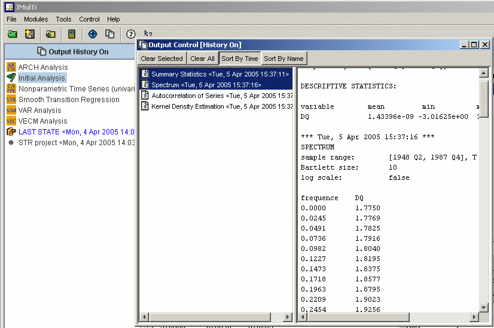

Output ControlThe symbol for the output control is . This system allows to log all output that is generated during the analysis in a single place. All output entries can be ordered according to name or time. Time ordering reflects the single steps of an analysis, whereas name ordering allows to group results from similar procedures. The output entries in the output control frame can be selected and the content of all selected elements appears in the text display to the right, from where it can be saved to a file. This makes it easy to gather all relevant output for saving. Because output accumulates very quickly, the logging can also be disabled via the toggle button OUTPUT HISTORY on top of the explorer panel. The symbol will then change to . No output elements will be added in this state. When a project is saved, all elements that are currently in the output control are stored as part this project and are restored when that project is loaded. This also means that all output elements are replaced by the projects output when it is loaded. Therefore, the accumulated output should be saved to an external file or as part of the current project before a new project is loaded.  |